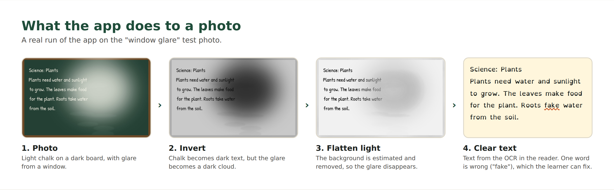
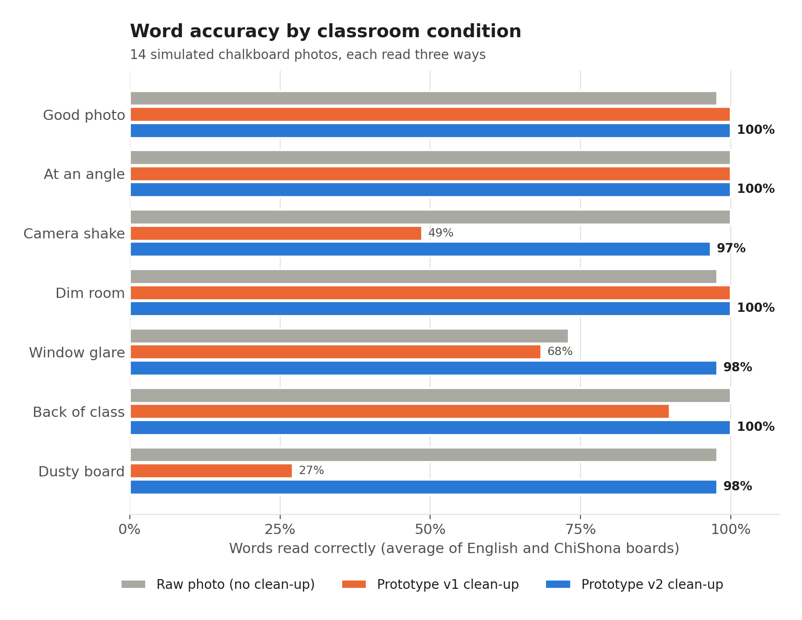
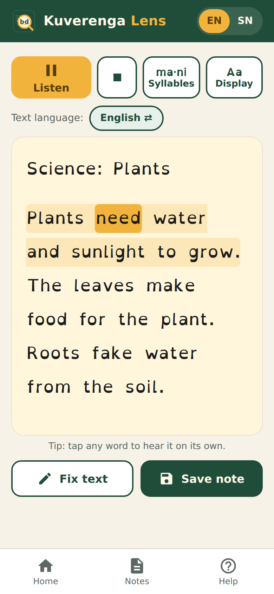
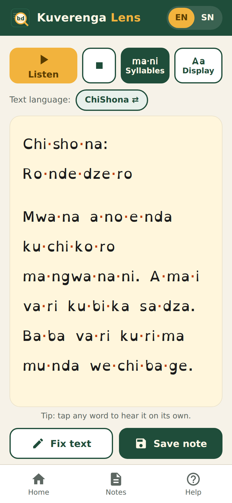
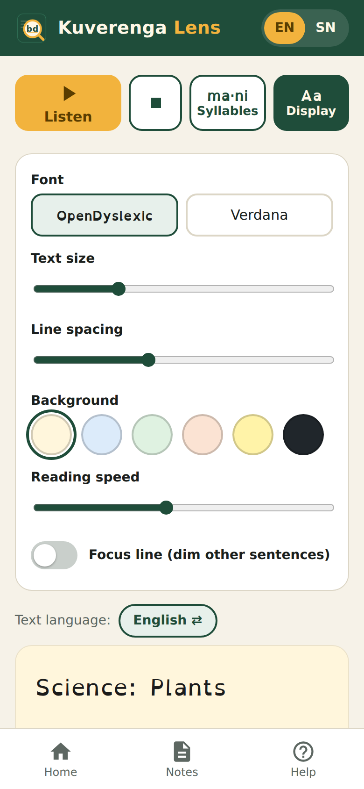
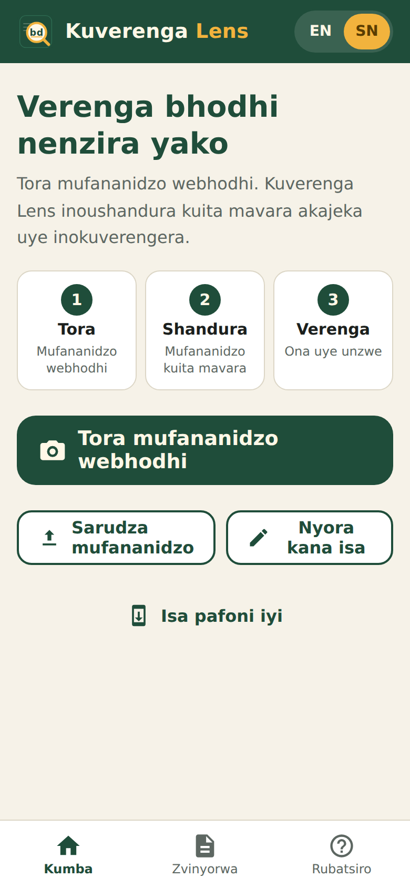

1The problem
In Zimbabwean classrooms, notes go on the chalkboard and learners must copy them before the board is wiped.
For learners with dyslexia this is a daily barrier: letters like b and d swap, they lose their place, and they copy slowly. Glare, chalk dust and distance make it worse.
Up to 15–20% of people show some signs of dyslexia (IDA), so there are several such learners in every class.
Needs assessment: [Add your key findings: how many teachers said slow copying delays lessons, and what share of learners find the board hard to read]
2Aim & hypothesis
Hypothesis: cleaning the photo (inverting the chalk and removing glare) before text recognition gives higher word accuracy than using the raw photo.
Design brief: it must run on cheap phones, work offline, need no Play Store, keep data private, and support both languages.
3What makes it innovative
ma·ngwa·na·ni · ku·chi·ko·ro
- OpenDyslexic font: heavy bottoms stop b/d flipping
- Double spacing and calm coloured backgrounds
- Syllable breaker for ChiShona and English
- Reads aloud and highlights each sentence
- Dual language, offline and private
4Cost & enterprise
Social enterprise: free for learners; schools pay $30 a year for training and support, which breaks even at about 13 schools.
Where: pilot at [School name, District], then nearby schools.
5Method: how it was made
Phone camera captures the board.
Invert chalk, flatten glare, OCR on the phone.
Dyslexia reader and read-aloud.

Real output of the prototype on a board photo with window glare.
Built with free tools: HTML, CSS and JavaScript (installable web app), Tesseract.js OCR, the OpenDyslexic font, the phone's text-to-speech, and Python + Playwright for automated tests.
Design cycle: need → brief → prototype v1 → test 14 board photos in 7 conditions → improve v2 → retest.
6Results
Average word accuracy, 14 simulated board photos (English and ChiShona, 7 conditions)

7Discussion
v1 was worse than doing nothing: its strong contrast step destroyed blurred (49%) and dusty (27%) writing.
v2 fixed this by flattening the background, and window glare rose from 73% to 98%. ChiShona was read as accurately as English.
Limitations: the photos were simulated; joined handwriting is harder; most phones lack a Shona voice. Next: trial with real learners and real boards.
8The working app






9Significance
Self
Research, design, coding and enterprise skills; a more inclusive teacher.
Learners
Read and hear notes at their own pace, in their own language.
Community
Free and offline for families with little data.
Zimbabwe
Inclusive education and ChiShona in technology.
Global village
SDG 4: inclusive, quality education for all; works in any chalkboard classroom.
10Conclusion
A free, offline, bilingual app can turn chalkboard notes into accessible text. Careful image cleaning matters: v2 reached 98.9% word accuracy and solved window glare, which supports the hypothesis.
Try it, with no Play Store: scan the code, open the link and tap "Add to Home screen". The app works offline after the first visit.